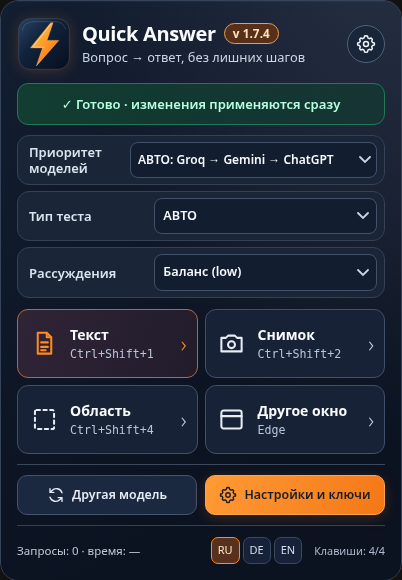
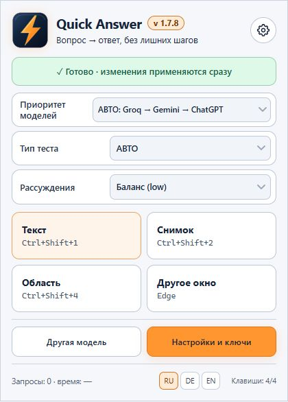

Установка
Распакуйте ZIP, подключите расширение без администратора.
›БРАУЗЕРНОЕ РАСШИРЕНИЕ · Windows 11 · Microsoft Edge · 1.7.8 Edge · Desktop 0.1 Preview
Быстрые ответы прямо в браузере
Quick Answer помогает анализировать текст и скриншоты в Microsoft Edge. Выбирайте модель, вызывайте действие горячей клавишей и получайте компактный ответ.
Предварительная версия. Проверяйте ответы модели; не передавайте конфиденциальные материалы и соблюдайте правила тестов.


Распакуйте ZIP, подключите расширение без администратора.
›Текст, снимок, область или другое окно.
›Автоопределение, нумерация и краткие пояснения.
›Groq → Gemini → ChatGPT при доступном подключении.
›Время ответа, квоты и проверка ошибок.
›Quick Answer помогает анализировать текст и скриншоты в Microsoft Edge. Выбирайте модель, вызывайте действие горячей клавишей и получайте компактный ответ.
Ключи хранятся в профиле Edge; текст и изображения отправляются выбранному провайдеру.
Начать работу →Распакуйте desktop-архив и запустите START_QuickAnswer.cmd. Требуются Windows 10/11, Windows PowerShell 5.1, WinForms и .NET Framework. Скомпилированного EXE нет. Ctrl+Alt+1: экран; 2: активное окно; 4: область. Ключи защищены DPAPI CurrentUser. Изображения отправляются выбранному провайдеру. Запуск, провайдеры, DPI и хоткеи не проверены. Вложенный Bridge принимает только браузерные расширения; desktop с ним пока несовместим.